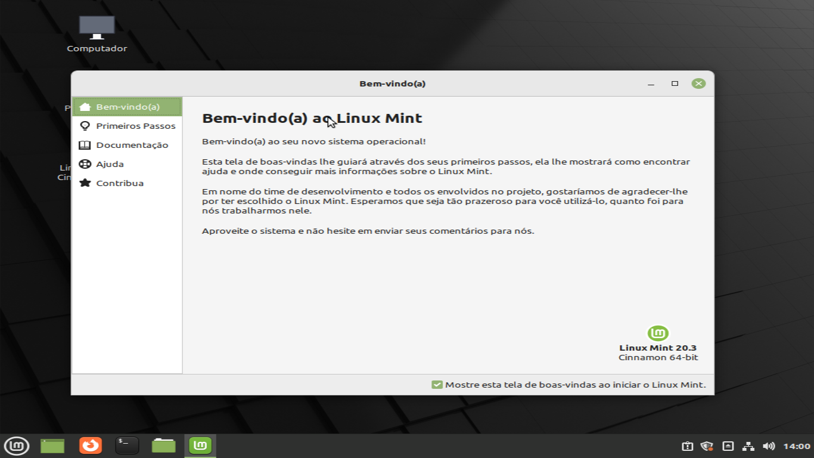

O Linux Mint 20.3 é um lançamento LTS (Long Term Support), que tera suporte até 2025, e ele vem com muitas novas funções e refinamentos para fazer sua experiência de desktop mais confortável
Oque há de novo?
Cantos das janelas agora são arredondados
Outras adições
- Novo driver de Touchpad "libinput"
- Correções de bugs e nova versão do WINE
- Correção de problemas de som e microfone
- Mover janelas atrávez da tecla alt
- Instalação de codecs multimídia offline
Sobre o Linux Mint
Oque ele é capaz de fazer?
O Linux Mint, como dito antes, é um sistema focado em pessoas que Nunca usaram Linux, ou querem um desktop pronto para o dia a dia e o trabalho.
Um de seus pilares mais fortes, é a Web, que desde a versão 20, o Linux Mint tem suporte a shortcuts nativos para websites, ou seja, um ícone no seu desktop, que quando clicado te leva ao seu website favorito.
Outros pilares muito bons do Mint, são a produtividade e os jogos: Ele vem incluso com um suite office nativa, que se concorre com o MS Office 365, porém, sendo mais leve e rápido. Já nos games, o linux já tem 80% da steam disponível para jogar, e com o lutris instalado, podemos jogar outros jogos também; tudo isso em menos de 10 minutos
Outros atributos notáveis do Linux Mint são:
- Ele funciona sem nenhum tipo de configuração ou instalação de drivers.
- É leve
- Tem respostas para quase todos os problemas na web.
- Muitos usuários
- Loja simples para instalação de aplicativos